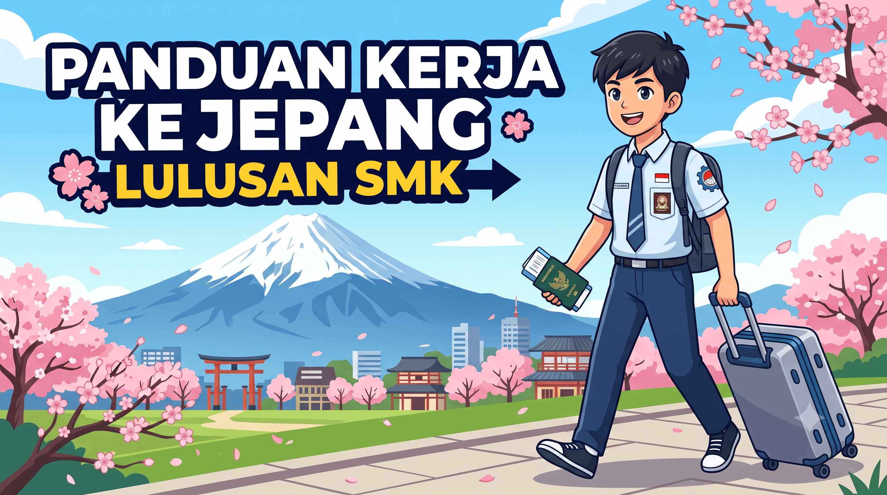

TRAMVIOR - APLIKASI AI ASISTANT UNTUK BELAJAR BAGI SMK DI SOLO RAYA DAN SEKITARNYA
TRAMVIOR bukan sekadar aplikasi AI. TRAMVIOR adalah sistem belajar terstruktur yang tahu jurusanmu, kelas berapa, materi apa yang sedang dipelajari, dan di bagian mana kamu sering salah — lalu membantumu sampai benar‑benar paham.
Lahir dari keluhan asli siswa SMK Solo Raya
Dari wawancara terhadap 12 narasumber di Solo Raya, satu masalah muncul berulang kali: siswa SMK tidak punya tempat belajar digital yang nyambung dengan jurusan mereka.
Materi terlalu umum
Konten belajar di internet tidak relevan dengan kebutuhan spesifik jurusan seperti akuntansi, otomotif, atau kuliner.
Belum siap kerja
Calon lulusan merasa kurang percaya diri menghadapi wawancara kerja, apalagi untuk peluang ke luar negeri seperti Jepang.
Kuota & sinyal terbatas
Kuota cepat habis dan koneksi tidak stabil di banyak wilayah pinggiran Solo Raya menghambat belajar daring.
Sulit fokus & cepat bosan
Perhatian mudah teralihkan ke media sosial, sementara belajar teori pasif terasa membosankan.
Satu ekosistem, empat langkah menuju siap kerja
TRAMVIOR memakai AI sebagai alat, bukan sebagai produk utama — supaya proses belajarmu terarah, terukur, dan langsung nyambung ke dunia kerja.
Baca kisah di balik TRAMVIORBelajar sesuai jurusan
AI Tutor dan video interaktif menyesuaikan otomatis dengan jurusanmu.
Latihan sampai paham
Video berhenti dan bertanya, soal harian dengan pembahasan langkah per langkah.
Simulasi dunia kerja
Latihan wawancara dan percakapan profesional sebelum PKL atau melamar kerja.
Kantongi bukti kompetensi
Skill Passport digital jadi portofolio yang bisa langsung dilampirkan saat melamar kerja.
Semua yang dibutuhkan siswa SMK untuk siap kerja
Dari AI Tutor 24 jam sampai Skill Passport digital — sembilan fitur yang dirancang khusus dari keluhan nyata siswa SMK Solo Raya.
AI Tutor Interaktif 24 Jam
Tanya kapan saja, penjelasan otomatis menyesuaikan jurusan, materi sulit dipecah jadi langkah kecil.
Konten Visual Interaktif
Video singkat 1–3 menit dan animasi bertahap per jurusan, bisa diunduh untuk diakses offline.
Video Berhenti dan Jawab
Video berhenti di titik tertentu dan meminta jawaban, memastikan kamu benar-benar memproses materi.
Latihan Soal Harian
Soal dikurasi sesuai jurusan dan kelas, dengan mode santai dan mode ujian berwaktu.
Dunia Kerja Simulator
Latihan wawancara kerja dan percakapan profesional bahasa Inggris & Jepang bersama AI.
Mulai gratis, upgrade kapan pun siap
Harga Rp15.000/bulan dipilih sebagai titik tengah paling inklusif berdasarkan wawancara langsung dengan siswa SMK di Solo Raya.
Gratis
Rasakan manfaatnya dulu sebelum memutuskan bayar.
- ✓ 5 pertanyaan AI Tutor / hari
- ✓ 2–3 video per jurusan / hari
- ✓ 5 soal latihan / hari
- ✓ 1 quest harian
- ✓ Gamifikasi tukar kuota (akses penuh)
Premium
Pengalaman belajar penuh, tanpa batasan harian.
- ✓ AI Tutor tanpa batas + penjelasan lengkap
- ✓ Semua video & pembahasan jawaban salah
- ✓ Bank soal + mode ujian berwaktu
- ✓ Dunia Kerja Simulator akses penuh
- ✓ Skill Passport Digital bisa diunduh & dibagikan
Cerita di balik lahirnya TRAMVIOR
"Materi di internet terlalu umum, nggak nyambung sama jurusan kuliner yang aku pelajari sehari-hari."
SMKN 3 Klaten, Kuliner
"Susah fokus belajar karena hp selalu menggoda. Butuh cara belajar yang lebih interaktif."
SMK Bina Patria 2 Sukoharjo, Otomotif
"Aku sering bingung tahap demi tahap jurnal akuntansi, tapi nggak ada yang bisa ditanya real-time malam hari."
SMK PGRI Pedan, Akuntansi
"Aku butuh simulasi wawancara kerja dan latihan percakapan bahasa Jepang buat persiapan kerja ke luar negeri."
Peserta kursus bahasa Jepang, Solo Raya
Tips & panduan untuk siswa SMK
5 Tips Sukses Wawancara Kerja untuk Siswa SMK
Persiapan praktis sebelum PKL atau melamar kerja pertama kali.
Baca selengkapnya →
Cara Hemat Kuota saat Belajar Online
Strategi belajar daring tanpa boros kuota bagi siswa di daerah pinggiran.
Baca selengkapnya →
Panduan Persiapan Kerja ke Jepang bagi Lulusan SMK
Langkah bahasa dan mental sebelum berangkat bekerja ke Jepang.
Baca selengkapnya →Pengalaman belajar bersama TRAMVIOR
Cerita dari siswa yang sudah mencoba TRAMVIOR. Ulasan ditampilkan setelah ditinjau oleh tim kami.